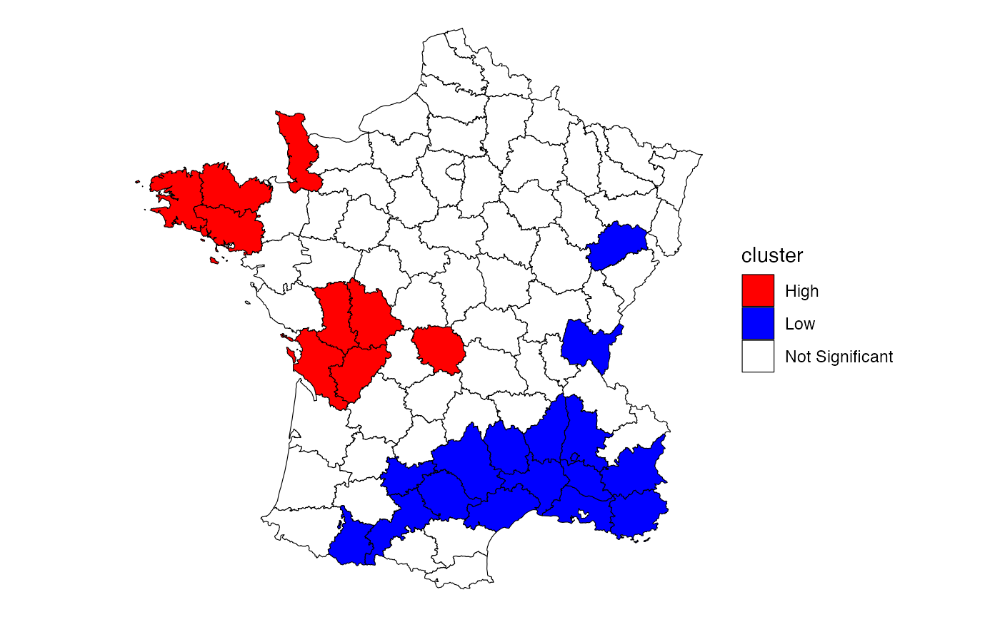

WIP: Understanding Emerging Hot Spots
Source:vignettes/articles/understanding-emerging-hotspots.Rmd
understanding-emerging-hotspots.RmdEmerging hot spot Analysis (EHSA) is a technique that falls under exploratory spatial data analysis (ESDA). It combines the traditional ESDA technique of hot spot analysis using the Getis-Ord Gi* statistic with the traditional time-series Mann-Kendall test for monotonic trends.
The goal of EHSA is to evaluate how hot and cold spots are changing over time. It helps us answer the questions: are they becoming increasingly hotter, Are they cooling down, or are they staying the same?
In brief, EHSA works by calculating the Gi* for each time period. The Gi* at each location is treated as a time-series and evaluated for a trend using the Mann-Kendall statistic. In this vignette we walk through the Gettis-Ord Gi*, the Mann-Kendall, and how the two work together to in EHSA. The Gi* and the Mann-Kendall are compared together to create 17 unique classifications to help better understand how the locations have changed over time.
Gettis-Ord Gi*
The Gettis-Ord Gi and Gi* (pronounced gee-eye-star) are one of the earliest LISAs. The Gi and Gi* measures are typically reported as a Z-score where high values indicate a high-high cluster and negative Z-scores indicate a low-low cluster. There are no high-low and low-high classifications like the local Moran.
“The Gi statistic consist of a ratio of the weighted average of the values in the neighboring locations, to the sum of all values, not including the value at the location (\(x_i\))” (Local Spatial Autocorrelation (2), GeoDa Center).
\[ G_i = \frac{\sum_{j \ne i}W_{ij}X_j} {\sum_{j \ne i}X_j} \]
The Gi* statistic includes the focal (or self, or ith) observation in the neighborhood.
\[ G_i* = \frac{\sum_{j}W_{ij}X_j} {\sum_{j}X_j} \]
Implementing the local Gi*
To calculate the local Gi* using sfdep, we have to be especially aware of the neighbors list when we create it. By default, when we create a neighbors list, we exclude the self from the observation. However, if we want to calculate the local Gi*, we must be sure to explicitly add it using include_self()
Here, we follow the example laid out by the GeoDa center documentation to calculate and plot the local Gi* statistic for donations using the Guerry dataset.
Here we create a neighbor list and include self and create weights from the neighbors.
library(sfdep)
library(dplyr)
guerry_nb <- guerry |>
mutate(nb = include_self(st_contiguity(geometry)),
wt = st_weights(nb)
) Following, we calculate the local Gi* using local_gstar_perm() on the donations column which creates a new data frame column called gistar. We then unnest it using tidyr::unnest()
donat_gistar <- guerry_nb |>
transmute(gistar = local_gstar_perm(donations, nb, wt, nsim = 999)) |>
tidyr::unnest(gistar)
donat_gistar
#> Simple feature collection with 85 features and 8 fields
#> Geometry type: MULTIPOLYGON
#> Dimension: XY
#> Bounding box: xmin: 47680 ymin: 1703258 xmax: 1031401 ymax: 2677441
#> CRS: NA
#> # A tibble: 85 × 9
#> gi_star e_gi var_gi p_value p_sim p_folded_sim skewness kurtosis
#> <dbl> <dbl> <dbl> <dbl> <dbl> <dbl> <dbl> <dbl>
#> 1 -1.46 0.0119 0.0000149 0.143 0.072 0.036 0.749 0.444
#> 2 -0.460 0.0117 0.00000947 0.646 0.752 0.376 0.745 0.562
#> 3 0.515 0.0121 0.0000105 0.606 0.546 0.273 0.625 0.470
#> 4 -1.64 0.0118 0.0000141 0.100 0.034 0.017 0.675 0.514
#> 5 -1.04 0.0116 0.0000176 0.300 0.288 0.144 0.949 1.41
#> 6 -2.26 0.0120 0.00000966 0.0239 0.002 0.001 0.841 1.41
#> 7 -0.381 0.0119 0.0000183 0.704 0.764 0.382 0.853 0.744
#> 8 -0.724 0.0119 0.0000190 0.469 0.508 0.254 0.939 0.899
#> 9 -1.43 0.0117 0.0000114 0.152 0.086 0.043 0.672 0.353
#> 10 -1.28 0.0117 0.0000116 0.199 0.15 0.075 0.731 0.531
#> # … with 75 more rows, and 1 more variable: geometry <MULTIPOLYGON>Lastly, we classify the clusters using a combination of mutate() and case_when() which is then piped into a ggplot map. While not a perfect recreation of the GeoDa map, it is very close—likely due to conditional permutation (see conditional permutation vignette for more on significance calculation).
library(ggplot2)
donat_gistar |>
mutate(cluster = case_when(
p_folded_sim > 0.05 ~ "Not Significant",
p_folded_sim <= 0.05 & gi_star < 0 ~ "Low",
p_folded_sim <= 0.05 & gi_star > 0 ~ "High"
)) |>
ggplot(aes(fill = cluster)) +
geom_sf(lwd = 0.2, color = "black") +
scale_fill_manual(values = c("High" = "red",
"Low" = "Blue",
"Not Significant" = "white")) +
theme_void()
In EHSA, we calculate this statistic for each location and every time period in our dataset.
Mann-Kendall Test
- tests if there is a monotonic trend either in a positive or negative direction
- if you dont remember what monotonic means, a monotonic series is one that is always increasing and never decreasing or vice versa.
- so a monotonic trend consistently increases (or decreases) through time. And, importantly the trend doesn’t have to be linear.
Below is an example of a monotonic upward trend which isnt linear
series <- c(0, 1, 1.4, 1.5, 1.6, 5, 5, 5.5, 20, seq(20, 21, length.out = 5))
plot(series, type = "l")- null hypothesis: no trend
https://www.real-statistics.com/time-series-analysis/time-series-miscellaneous/mann-kendall-test/
Emerging Hot Spot Analysis by Hand
library(sfdep)
library(dplyr)
# replicate the guerry dataset 10 times
x <- purrr::map_dfr(1:10, ~guerry) |>
select(code_dept, crime_pers) |>
# create an indicator for time period
mutate(time_period = sort(rep(1:10, 85)),
# add some noise
crime_pers = crime_pers * runif(850, max = 2))
spt <- as_spacetime(x, .loc_col = "code_dept", "time_period")Here we calculate emerging hot spots manually. However, here we cannot include time lag because there’s no outside of the box functionality to do so.
This chunk:
- activates the geometry context and:
- creates neighbors
- weights
- activates the data context
- sets the neighbor column from the geometry context
- sets the weights column from the geometry context
- groups by
time_period - calculates the local Gi* for each time period
gistars <- spt |>
activate("geometry") |>
mutate(nb = include_self(st_contiguity(geometry)),
wt = st_weights(nb)) |>
activate("data") |>
set_nbs("nb") |>
set_wts("wt") |>
group_by(time_period) |>
mutate(gi_star = local_gstar_perm(crime_pers, nb, wt))here we see the Gi* for one location for all time periods.
dept_01_trend <- gistars |>
tidyr::unnest(gi_star) |>
filter(code_dept == "01") |>
select(gi_star, time_period, p_sim)
dept_01_trend
#> # A tibble: 10 × 3
#> # Groups: time_period [10]
#> gi_star time_period p_sim
#> <dbl> <int> <dbl>
#> 1 0.309 1 0.716
#> 2 -1.11 2 0.256
#> 3 2.19 3 0.052
#> 4 -0.217 4 0.892
#> 5 0.563 5 0.504
#> 6 2.24 6 0.04
#> 7 -0.898 7 0.376
#> 8 -0.976 8 0.376
#> 9 2.60 9 0.012
#> 10 0.825 10 0.42Then we calculate the Mann-kendall statistic for it
Kendall::MannKendall(dept_01_trend[["gi_star"]])
#> tau = 0.2, 2-sided pvalue =0.47427Here we have an insignificant positive trend
next we
x |>
group_by(time_period) |>
arrange(time_period, code_dept) |>
mutate(nb = include_self(st_contiguity(geometry)),
wt = st_weights(nb),
gi_star = local_gstar(crime_pers, nb, wt)) |>
group_by(code_dept) |>
summarise(trend = broom::tidy(Kendall::MannKendall(gi_star))) |>
tidyr::unnest(trend) |>
arrange(p.value)
#> Simple feature collection with 85 features and 6 fields
#> Geometry type: MULTIPOLYGON
#> Dimension: XY
#> Bounding box: xmin: 47680 ymin: 1703258 xmax: 1031401 ymax: 2677441
#> CRS: NA
#> # A tibble: 85 × 7
#> code_dept statistic p.value kendall_score denominator var_kendall_score
#> <fct> <dbl> <dbl> <dbl> <dbl> <dbl>
#> 1 41 -0.600 0.0200 -27 45 125
#> 2 44 -0.556 0.0318 -25 45 125
#> 3 49 -0.556 0.0318 -25 45 125
#> 4 60 0.556 0.0318 25 45 125
#> 5 02 0.511 0.0491 23 45 125
#> 6 56 -0.467 0.0736 -21 45 125
#> 7 51 0.467 0.0736 21 45 125
#> 8 35 -0.422 0.107 -19 45 125
#> 9 46 -0.422 0.107 -19 45 125
#> 10 77 0.422 0.107 19 45 125
#> # … with 75 more rows, and 1 more variable: geometry <MULTIPOLYGON>Here we use emerging hot spot analysis function from sfdep using no time lag
spt <- x |>
as_spacetime("code_dept", "time_period")
emerging_hotspot_analysis(spt, "crime_pers", k = 0) |>
arrange(p_value)
#> # A tibble: 85 × 4
#> location tau p_value classification
#> <fct> <dbl> <dbl> <chr>
#> 1 41 -0.600 0.0200 no pattern detected
#> 2 44 -0.556 0.0318 no pattern detected
#> 3 49 -0.556 0.0318 no pattern detected
#> 4 60 0.556 0.0318 no pattern detected
#> 5 02 0.511 0.0491 sporadic hotspot
#> 6 56 -0.467 0.0736 no pattern detected
#> 7 51 0.467 0.0736 no pattern detected
#> 8 35 -0.422 0.107 sporadic hotspot
#> 9 46 -0.422 0.107 no pattern detected
#> 10 77 0.422 0.107 no pattern detected
#> # … with 75 more rows